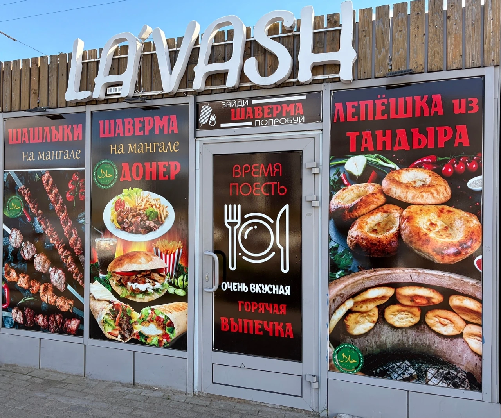
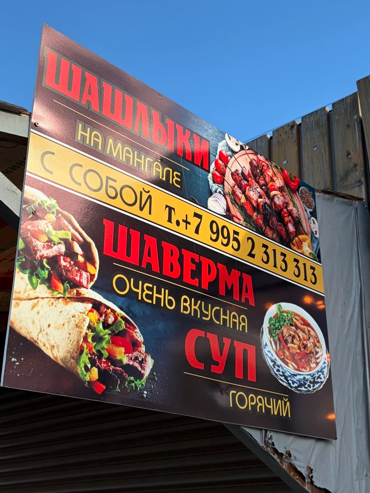
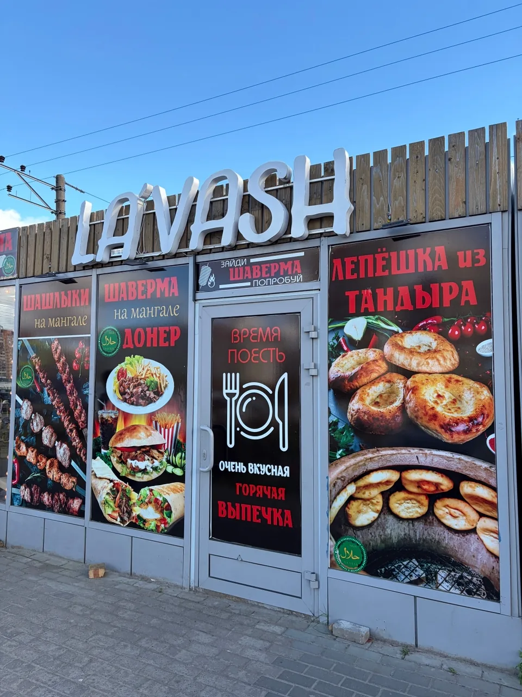
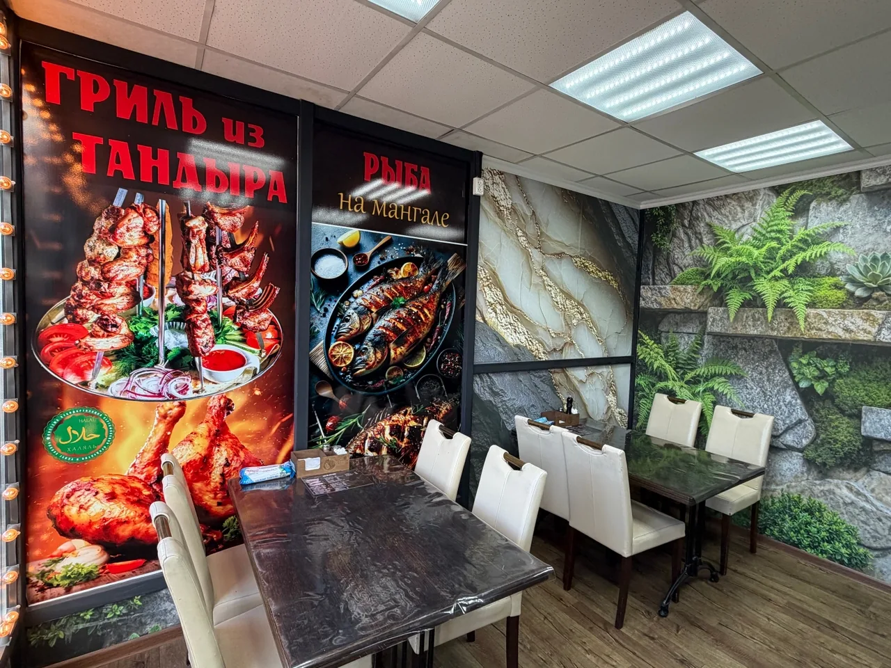

Мурино · ежедневно 11:00–23:00
Горячий мангал.
Честная еда.
Шашлык, шаверма, донер, рыба на мангале и блюда кавказской кухни — готовим с огня и подаём без лишнего.
📍Авиаторов Балтики, 7АМурино
🕚11:00–23:00каждый день
🛵ДоставкаЯндекс Еда

LA’VASHшашлык · шаверма · тандыр
ШАШЛЫК • ШАВЕРМА • ДОНЕР • РЫБА НА МАНГАЛЕ • ТАНДЫР • СУПЫ • САЛАТЫ
Доставка
Доставка уже доступна
Теперь заказать любимые блюда можно и онлайн — через Яндекс Еду. Также можно прийти к нам в Мурино или оформить заказ с собой по телефону.
Заведение
Нас легко найти
La’vash находится по адресу: проспект Авиаторов Балтики, 7А, Мурино. Внутри есть посадочные места.



Контакты
Заходите за горячим
Ленинградская область, Мурино,
проспект Авиаторов Балтики, 7А
Телефон заведения+7 (995) 2 313 313
Позвонить
Режим работы
11:00 — 23:00
Перед визитом в праздничные дни рекомендуем уточнить режим работы.
ежедневно
Перед визитом в праздничные дни рекомендуем уточнить режим работы.